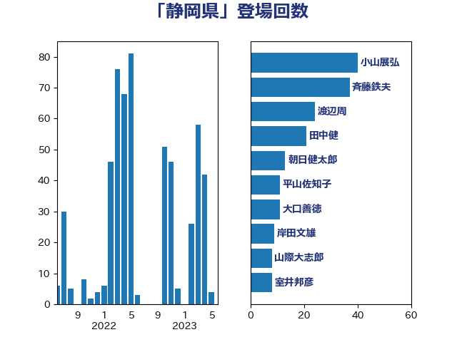

単語「静岡県」

| 小山展弘 | 立憲民主党 | 40 回 |
| 斉藤鉄夫 | 公明党 | 37 回 |
| 渡辺周 | 立憲民主党 | 24 回 |
| 田中健 | 国民民主党 | 21 回 |
| 朝日健太郎 | 自由民主党 | 13 回 |
| 平山佐知子 | 無所属 | 11 回 |
| 大口善徳 | 公明党 | 11 回 |
| 岸田文雄 | 自由民主党 | 9 回 |
| 山際大志郎 | 自由民主党 | 8 回 |
| 室井邦彦 | 日本維新の会 | 8 回 |
| 長浜博行 | 無所属 | 7 回 |
| 小倉將信 | 自由民主党 | 7 回 |
| 若林洋平 | 自由民主党 | 6 回 |
| 神津たけし | 立憲民主党 | 6 回 |
| 後藤祐一 | 立憲民主党 | 6 回 |
| 市村浩一郎 | 日本維新の会 | 6 回 |
| 大野泰正 | 自由民主党 | 6 回 |
| 高橋千鶴子 | 日本共産党 | 5 回 |
| 足立康史 | 日本維新の会 | 5 回 |
| 牧野たかお | 自由民主党 | 5 回 |
| 渡辺猛之 | 自由民主党 | 5 回 |
| 永井学 | 自由民主党 | 5 回 |
| 森屋隆 | 立憲民主党 | 5 回 |
| 川崎ひでと | 自由民主党 | 5 回 |
| 中島克仁 | 立憲民主党 | 5 回 |
| 西村康稔 | 自由民主党 | 4 回 |
| 榛葉賀津也 | 国民民主党 | 4 回 |
| 勝俣孝明 | 自由民主党 | 4 回 |
| 加藤鮎子 | 自由民主党 | 4 回 |
| 野村哲郎 | 自由民主党 | 3 回 |
| 西村明宏 | 自由民主党 | 3 回 |
| 羽田次郎 | 立憲民主党 | 3 回 |
| 本田顕子 | 自由民主党 | 3 回 |
| 打越さく良 | 立憲民主党 | 3 回 |
| 山口壯 | 自由民主党 | 3 回 |
| 山下芳生 | 日本共産党 | 3 回 |
| 小宮山泰子 | 立憲民主党 | 3 回 |
| 仁比聡平 | 日本共産党 | 3 回 |
| 中根一幸 | 自由民主党 | 3 回 |
| 三上えり | 立憲民主党 | 3 回 |
| 西田昭二 | 自由民主党 | 2 回 |
| 葉梨康弘 | 自由民主党 | 2 回 |
| 萩生田光一 | 自由民主党 | 2 回 |
| 篠原孝 | 立憲民主党 | 2 回 |
| 田嶋要 | 立憲民主党 | 2 回 |
| 源馬謙太郎 | 立憲民主党 | 2 回 |
| 深澤陽一 | 自由民主党 | 2 回 |
| 浜野喜史 | 国民民主党 | 2 回 |
| 池畑浩太朗 | 日本維新の会 | 2 回 |
| 永岡桂子 | 自由民主党 | 2 回 |
| 早坂敦 | 日本維新の会 | 2 回 |
| 斎藤嘉隆 | 立憲民主党 | 2 回 |
| 山口那津男 | 公明党 | 2 回 |
| 小沢雅仁 | 立憲民主党 | 2 回 |
| 宮崎雅夫 | 自由民主党 | 2 回 |
| 大岡敏孝 | 自由民主党 | 2 回 |
| 堀場幸子 | 日本維新の会 | 2 回 |
| 務台俊介 | 自由民主党 | 2 回 |
| 佐々木さやか | 公明党 | 2 回 |
| 伴野豊 | 立憲民主党 | 2 回 |
| 中条きよし | 日本維新の会 | 2 回 |
| 下野六太 | 公明党 | 2 回 |
| たがや亮 | れいわ新選組 | 2 回 |
| 高木かおり | 日本維新の会 | 1 回 |
| 須藤元気 | 無所属 | 1 回 |
| 青木愛 | 立憲民主党 | 1 回 |
| 野田国義 | 立憲民主党 | 1 回 |
| 野中厚 | 自由民主党 | 1 回 |
| 野上浩太郎 | 自由民主党 | 1 回 |
| 近藤昭一 | 立憲民主党 | 1 回 |
| 足立敏之 | 自由民主党 | 1 回 |
| 西村智奈美 | 立憲民主党 | 1 回 |
| 藤川政人 | 自由民主党 | 1 回 |
| 藤岡隆雄 | 立憲民主党 | 1 回 |
| 菅家一郎 | 自由民主党 | 1 回 |
| 自見はなこ | 自由民主党 | 1 回 |
| 緒方林太郎 | 無所属 | 1 回 |
| 紙智子 | 日本共産党 | 1 回 |
| 竹内真二 | 公明党 | 1 回 |
| 福島伸享 | 無所属 | 1 回 |
| 石川大我 | 立憲民主党 | 1 回 |
| 石井拓 | 自由民主党 | 1 回 |
| 石井啓一 | 公明党 | 1 回 |
| 田名部匡代 | 立憲民主党 | 1 回 |
| 玉木雄一郎 | 国民民主党 | 1 回 |
| 牧島かれん | 自由民主党 | 1 回 |
| 浜地雅一 | 公明党 | 1 回 |
| 浜口誠 | 国民民主党 | 1 回 |
| 泉田裕彦 | 自由民主党 | 1 回 |
| 池下卓 | 日本維新の会 | 1 回 |
| 武部新 | 自由民主党 | 1 回 |
| 櫻井周 | 立憲民主党 | 1 回 |
| 根本幸典 | 自由民主党 | 1 回 |
| 林芳正 | 自由民主党 | 1 回 |
| 松野明美 | 日本維新の会 | 1 回 |
| 松沢成文 | 日本維新の会 | 1 回 |
| 松本剛明 | 自由民主党 | 1 回 |
| 本村伸子 | 日本共産党 | 1 回 |
| 有村治子 | 自由民主党 | 1 回 |
| 早稲田ゆき | 立憲民主党 | 1 回 |
| 川田龍平 | 立憲民主党 | 1 回 |
| 岬麻紀 | 日本維新の会 | 1 回 |
| 山東昭子 | 自由民主党 | 1 回 |
| 小里泰弘 | 自由民主党 | 1 回 |
| 宮澤博行 | 自由民主党 | 1 回 |
| 宮本岳志 | 日本共産党 | 1 回 |
| 塩田博昭 | 公明党 | 1 回 |
| 塩川鉄也 | 日本共産党 | 1 回 |
| 塩崎彰久 | 自由民主党 | 1 回 |
| 堤かなめ | 立憲民主党 | 1 回 |
| 吉良よし子 | 日本共産党 | 1 回 |
| 吉川赳 | 無所属 | 1 回 |
| 古川康 | 自由民主党 | 1 回 |
| 古川元久 | 国民民主党 | 1 回 |
| 佐藤英道 | 公明党 | 1 回 |
| 伊波洋一 | 無所属 | 1 回 |
| 中川康洋 | 公明党 | 1 回 |
| 上川陽子 | 自由民主党 | 1 回 |
| こやり隆史 | 自由民主党 | 1 回 |